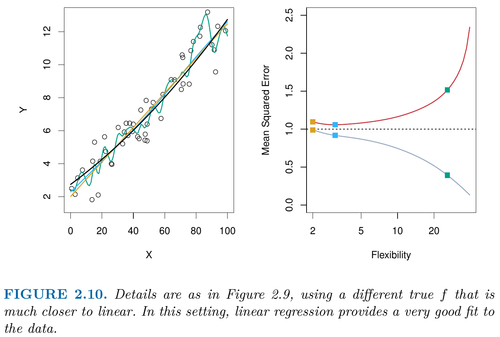

2 Statistical Learning
Reading: Chapter 2 of our course textbook An Introduction to Statistical Learning
2.1 What is Statistical Learning?
Suppose that we observe a quantitative response \(Y\in\mathbb{R}\) and \(p\) different predictors, \(X_1\in\mathbb{R}, X_2\in\mathbb{R}, \dots, X_p\in\mathbb{R}.\)
We assume that there is some relationship between \(Y\) and \[ X = (X_1, X_2, \dots, X_p), \] which can be written in the very general form \[ Y = f(X) + \epsilon. \]
- \(f\) is some fixed but unknown function of \(X = (X_1, X_2, \dots, X_p):\)
-
\(\epsilon\) a random error term fulfilling the following two assumptions:
- \(\epsilon\) and \(X\) are independent of each other (this can be relaxed for linear models; see Chapter 4)
- \(\epsilon\) has mean zero \(E(\epsilon)=0\) and variance \(Var(\epsilon)=\sigma^2>0.\)
In this formulation, \(f\) represents the systematic information that \(X\) provides about \(Y.\)
In essence, statistical learning refers to a set of approaches for estimating the unknown function \(f.\)
In this chapter we outline some of the key theoretical concepts that arise in estimating \(f,\) as well as tools for evaluating the estimates obtained.
2.1.1 Why Estimate \(f\)?
There are two main reasons that we may wish to estimate \(f\):
- prediction and
- inference.
In the following, we discuss each in turn.
Prediction
In many situations, a set of inputs \(X\) are readily available, but the output \(Y\) cannot be easily obtained. In this setting, since the error term averages to zero, we can predict \(Y\) using \[ \hat{Y} = \hat{f}(X), \]
- \(\hat{f}\) represents our estimate for \(f\)
- \(\hat{Y}\) represents the resulting prediction for \(Y\)
In this setting, \(\hat{f}\) is often treated as a black box, in the sense that one is not typically concerned with the exact form of \(\hat{f},\) provided that it yields accurate predictions for \(Y.\)
Example: As an example, suppose that \((X_1, X_2, \dots, X_p)\) are characteristics of a patient’s blood sample that can be easily measured in a lab, and \(Y\) is a variable encoding the patient’s risk for a severe adverse reaction to a particular drug. It is natural to seek to predict \(Y\) using \(X,\) since we can then avoid giving the drug in question to patients who are at high risk of an adverse reaction–that is, patients for whom the estimate of \(Y\) is high.
Accuracy of a Prediction
The accuracy of \(\hat{Y}\) as a prediction for \(Y\) depends on two quantities:
- the reducible error, i.e. the difference between \(\hat{f}\) and \(f\) and
- the irreducible error, i.e. the error term \(\epsilon.\)
In general, \(\hat{f}\) will not be a perfect estimate for \(f,\) and this inaccuracy will introduce some error. This error is reducible, because we can potentially improve the accuracy of \(\hat{f}\) by using the most appropriate statistical learning technique to estimate \(f.\)
However, even if it were possible to form a perfect estimate for \(f,\) so that our estimated response took the form \[ \hat{Y} = f (X), \] our prediction would still have some error in it! This is because \(Y\) is also a function of \(\epsilon\) which, by definition, cannot be predicted using \(X.\) Therefore, variability associated with \(\epsilon\) also affects the accuracy of our predictions. This is known as the irreducible error, because no matter how well we estimate \(f,\) we cannot reduce the error introduced by \(\epsilon.\)
Consider a given estimate \(\hat{f}\) and a given set of predictors \(X,\) which yields the prediction \(\hat{Y} = \hat{f}(X).\) That is, assume for a moment that both \(\hat{f}\) and \(X\) are fixed, so that the only variability comes from \(\epsilon.\) Then, it is easy to show that \[ \begin{align*} \overbrace{E\left[(Y - \hat{Y})^2\right]}^{\text{Mean Squared (Prediction) Error}} =\underbrace{\left(f(X) -\hat{f}(X)\right)^2}_{\text{reducable}} + \underbrace{Var\left(\epsilon\right)}_{\text{irreducable}}, \end{align*} \qquad(2.1)\] where
- \(E\left[(Y - \hat{Y})^2\right]\) represents the expected value, of the squared difference between the predicted \(\hat{Y}=\hat{f}(X)\) and actual value of \(Y,\)
- and \(Var(\epsilon)\) represents the variance associated with the error term \(\epsilon.\)
Derivation of Equation 2.1 for a given \(\hat{f}\) and a given \(X;\) i.e. only \(\epsilon\) is random:
\[\begin{align*} &E\left[(Y - \hat{Y})^2\right]\\[2ex] &\text{[using $Y=f(X)+\epsilon$]}\\[2ex] &=E\left[(f(X) + \epsilon - \hat{f}(X))^2\right]\\[2ex] &\text{[binomial formula]}\\[2ex] &=E\left[\left(f(X) -\hat{f}(X)\right)^2 - 2\left(f(X) -\hat{f}(X)\right)\epsilon + \epsilon^2\right]\\[2ex] &\text{[using that $X$ and $\hat{f}$ are fixed]}\\[2ex] % &=E\left[\left(f(X) -\hat{f}(X)\right)^2\right] - 2E\left[\left(f(X) -\hat{f}(X)\right)\epsilon\right] + E\left[\epsilon^2\right] \\[2ex] &=\left(f(X) -\hat{f}(X)\right)^2 - 2\left(f(X) -\hat{f}(X)\right) E\left[\epsilon\right] + E\left[\epsilon^2\right] \\[2ex] &\text{[using that $E(\epsilon)=0$ and $E(\epsilon^2)=Var(\epsilon)=\sigma^2$]}\\[2ex] &=\left(f(X) -\hat{f}(X)\right)^2 - 2\left(f(X) -\hat{f}(X)\right) \cdot 0 + Var\left(\epsilon\right) \\[2ex] &=\underbrace{\left(f(X) -\hat{f}(X)\right)^2}_{\text{reducable}} + \underbrace{Var\left(\epsilon\right)}_{\text{irreducable}} \end{align*}\]
It is important to keep in mind that the irreducible error will always provide an upper bound on the accuracy of our prediction for \(Y,\) i.e. \[ E\left[(Y - \hat{Y})^2\right] \geq Var\left(\epsilon\right) \] This bound is almost always unknown in practice.
The focus of this course is on techniques for estimating \(f\) with the aim of minimizing the reducible error.
Inference
We are often interested in understanding the association between \(Y\) and \(X_1,\dots,X_p.\) In this situation we wish to estimate \(f,\) but our goal is not necessarily to make predictions for \(Y.\) Now \(\hat{f}\) cannot be treated as a black box, because we need to know its exact form. In this setting, one may be interested in answering the following questions:
- Which predictors are associated with the response?
- What is the relationship between the response and each predictor?
- Can the relationship between \(Y\) and each predictor be adequately summarized using a linear equation, or is the relationship more complicated?
Inference typically means inference about model parameters.
In this course, we will see a number of examples that fall into the prediction setting (Classification), the inference setting (Linear Regression), or a combination of the two.
2.2 How Do We Estimate \(f\)?
Setup: Consider the general regression model \[ Y=f(X)+\epsilon, \qquad(2.2)\] where \[ X=(X_{1}, \dots,X_{p}) \] is a multivariate (\(p\)-dimensional) predictor.
Let \[ \{(X_1,Y_1),(X_2,Y_2),\dots,(X_n,Y_n)\}, \qquad(2.3)\] be a random sample from Equation 2.2, i.e.
The random sample Equation 2.3 is thus a set of \(n\) many independent and identically distributed (iid) multivariate random variables \[ \{(X_1,Y_1),(X_2,Y_2),\dots,(X_n,Y_n)\} \] with \[ (X_i,Y_i)\overset{\text{iid}}{\sim} (X,Y),\quad i=1,\dots,n. \]
An observed realization of the random sample will be denoted using lowercase letters \[ \{(x_1,y_1),(x_2,y_2),\dots,(x_n,y_n)\}. \] These \(n\) observations are called training data because we will use these observations to train/learn \(\hat{f}\), i.e., to compute the estimate \(\hat{f}\) of the unknown \(f.\)
Our goal is to find (i.e. learn from training data) a function \(\hat{f}\) such that \[ Y \approx \hat{f}(X) \] for any observed realization of \((X, Y).\)
That is, the estimate \(\hat{f}\) needs to provide good approximations \[ y_{i} \approx \hat{f}(x_{i}) \] not only for the observed training data points \[ (x_i,y_i),\quad i=1,\dots,n, \] but also for any possible new realization \((x_{new},y_{new})\) of \((X,Y)\) \[ y_{new} \approx \hat{f}(x_{new}). \]
Fitting the noise (irreducible component) in the training data will typically lead to bad approximations of new observations of a test data set.


Broadly speaking, most statistical learning methods for this task can be characterized as either
- parametric or
- non-parametric.
In the following, we discuss each in turn.
Parametric Methods
Parametric methods involve a two-step model-based estimation approach:
First, we make an assumption about the functional form, or shape, of \(f.\) For example, a very simple, but often used assumption is that \(f\) is a linear function, i.e. \[ f(X) = \beta_0 + \beta_1 X_1 + \beta_2 X_2 + \dots + \beta_p X_p. \qquad(2.4)\]
After a model has been selected, we need a procedure that uses the training data to fit or train the model. For example, in the case of the linear model Equation 2.4, we need to estimate the parameters \(\beta_0,\beta_1,\dots,\beta_p\) such that \[ Y \approx \beta_0 + \beta_1 X_1 + \beta_2 X_2 + \dots + \beta_p X_p \]
Most common estimation technique: (Ordinary) Least Squares (OLS)
The parametric model-based approach reduces the problem of estimating \(f\) down to one of estimating a finite set of parameters \(\beta_0,\beta_1,\dots,\beta_p.\)
- Pro: Simple to estimate
- Con: Possible model misspecification (Why should we know the true shape/form of \(f\)?)
We can try to address the problem of model misspecification by choosing flexible models that can fit many different possible functional forms for \(f.\)
But: Fitting a more flexible model requires estimating a greater number of parameters (large \(p\)). These more complex models can lead to a phenomenon known as overfitting the data, which essentially means they follow the errors/noise too closely.
These issues (model-flexibility and overfitting) are discussed through-out this course.
Examples:
- Simple linear regression model
- Multiple linear regression model
Non-Parametric Methods
Non-parametric methods (e.g. \(K\) nearest neighbor regression) do not make explicit assumptions about the functional form of \(f.\) Instead, they make qualitative assumptions on \(f\) such as, for instance, requiring that \(f\) is a smooth (e.g. two times continuously differentiable) function.
Pro: By avoiding the assumption of a particular parametric functional form for \(f,\) non-parametric methods have the potential to accurately fit a wider range of possible shapes for \(f.\)
Con: Non-parametric methods require a large number of observations to obtain an accurate estimate for \(f;\) far more observations than is typically needed for a parametric approach if the parametric model assumption is correct. (Non-parametric methods are “data-hungry”.)
Examples:
- Spline regression methods (smoothing splines or regression splines)
- \(K\) nearest neighbor regression
2.2.1 Trade-Off Between Prediction Accuracy and Model Interpretability
One might reasonably ask the following question:
Why would we ever choose to use a more restrictive method instead of a very flexible approach?
If we are mainly interested in inference, then restrictive models are much more interpretable. For instance, when inference is the goal, the linear model may be a good choice since it will be quite easy to understand the relationship between \(Y\) and \(X_1,\dots,X_p.\)
By contrast, very flexible approaches, such as purely non-parametric methods, can lead to such complicated estimates of \(f\) that it is difficult to understand how any individual predictor \(X_j\) is associated with the response \(Y.\)
In some settings, we are only interested in prediction, and the interpretability of the predictive model is simply not of interest. For instance, if we seek to develop an algorithm to predict the price of a stock, our sole requirement for the algorithm is that it predict accurately. In such settings, we might expect that it will be best to use the most flexible model available. Right?
Surprisingly, this is not always the case! We will often obtain more accurate predictions using a less flexible method. This phenomenon, which may seem counterintuitive at first glance, has to do with the potential for overfitting in highly flexible methods.
2.2.2 Supervised versus Unsupervised Learning
Most statistical learning problems fall into one of two categories:
- supervised
- unsupervised
In supervised learning problems, we observe for each predictor \(x_i,\) \(i=1,\dots,n,\) also a response \(y_i.\)
In unsupervised learning problems, we only observe the predictor \(x_i,\) \(i=1,\dots,n,\) but not the associated responses \(y_i.\)
Supervised learning methods:
- regression analysis
- logistic regression
- lasso
- ridge regression
Unsupervised learning methods:
- cluster analysis (clustering); for instance, using the \(K\)-means algorithm
2.2.3 Regression Versus Classification Problems
Variables can be characterized as either quantitative or qualitative (also known as categorical).
Quantitative: Quantitative variables take on numerical values. Examples include a person’s age, height, or income, the value of a house, and categorical the price of a stock.
Qualitative/Categorial: Examples of qualitative variables include a person’s marital status (married or not), the brand of product purchased (brand A, B, or C), whether a person defaults on a debt (yes or no), or a cancer diagnosis (Acute Myelogenous Leukemia, Acute Lymphoblastic Leukemia, or No Leukemia).
We tend to refer to problems with a quantitative response as regression problems, while those involving a qualitative response are often referred to as classification problems.
However, the distinction (regression vs. classification) is not always that crisp. Least squares linear regression is used with a quantitative response, whereas logistic regression is typically used with a qualitative (two-class, or binary). Thus, despite its name, logistic regression is a classification method. But since it estimates class probabilities, it can be thought of as a regression method as well. Some statistical methods, such as K-nearest neighbors can be used in the case of either quantitative or qualitative responses.
2.3 Assessing Model Accuracy
It is an important task to decide for any given set of data which method produces the best results. Selecting the best approach can be one of the most challenging parts of performing statistical learning in practice.
Let \[ \{(X_{01},Y_{01}),(X_{02},Y_{02}),\dots,(X_{0m},Y_{0m})\}, \qquad(2.5)\] denote the test data random sample, where \[ (X_{0i},Y_{0i})\overset{\text{iid}}{\sim}(X,Y),\quad i=1,\dots,m. \] with \((X,Y)\) being defined by the general regression model \[ Y=f(X)+\epsilon \] as in Equation 2.2.
That is, the new test data is random sample, which …
- is independent of the training data random sample Equation 2.3
- has the same distribution as the training data random sample Equation 2.3
The observed realization \[ \{(x_{01},y_{01}),(x_{02},y_{02}),\dots,(x_{0m},y_{0m})\}, \] of the test data random sample is used to check the accuracy of the estimate \(\hat{f}.\)
2.3.1 Measuring the Quality of Fit
In the regression setting, the most commonly-used measure is the mean squared (prediction) error (MSE).
The global training (data) MSE is given by \[\begin{align*} \operatorname{MSE}_{\text{train}}=\frac{1}{n}\sum_{i=1}^n\left(y_i - \hat{f}(x_i)\right)^2, \end{align*}\] where
- \(\hat{f}\) is computed from the training data
- \(\hat{f}(x_i)\) is the prediction that \(\hat{f}\) gives for the \(i\)th training data observation.
In general, however, we do not really care how well the method works on the training data. We are interested in the accuracy of the predictions that we obtain when we apply our method to previously unseen test data.
Thus, we want to choose the method that gives the lowest test MSE, as opposed to the lowest training MSE.
Local Test MSE
Let \(\hat{f}\) be computed from the training data \(\{(x_1,y_1),\dots,(x_n,y_n)\}.\) And let \[ \{(x_{0},y_{01}),(x_{0},y_{02})\dots,(x_{0},y_{0m})\} \] denote the set of \(m\) test data points \(y_{01},\dots,y_{0m}\) for one given predictor value \(x_0.\)
This type of \(x_0\)-specific test data is a realization of a conditional random sample given \(X=x_0,\) \[ (x_{0},Y_{0i})\overset{\text{iid}}{\sim}(X,Y)|X=x_0,\quad i=1,\dots,m. \] This test data random sample is independent of the training data random sample whose realization was used to compute \(\hat{f}.\)
Then, the point-wise test MSE at \(X=x_0\) is given by, \[\begin{align*} \operatorname{MSE}_{\text{test}}(x_0)= \frac{1}{m}\sum_{i=1}^m\left(y_{0i} - \hat{f}(x_{0})\right)^2. \end{align*}\]
Global Test MSE
Typically, however, we want that a method has globally, i.e. for all predictor values in the range of \(X\), a low test MSE (not only at a certain given value \(x_0\)). Let \[ \{(x_{01},y_{01}),(x_{02},y_{02})\dots,(x_{0m},y_{0m})\} \] denote the set of \(m\) test data points with different predictor values \(x_{01},\dots,x_{0m}\) in the range of \(X\). This type of test data is a realization of a random sample \[ (X_{0i},Y_{0i})\overset{\text{iid}}{\sim}(X,Y),\quad i=1,\dots,m. \] This test data random sample is independent of the training data random sample whose realization was used to compute \(\hat{f}.\)
Then, the global test MSE is given by, \[ \begin{align*} \operatorname{MSE}_{\text{test}}=\frac{1}{m}\sum_{i=1}^m\left(y_{0i} - \hat{f}(x_{0i})\right)^2. \end{align*} \]
Note that if \(\hat{f}\) is a really good estimate of \(f,\) i.e. if \(\hat{f}\approx f,\) then \[ \begin{align*} \operatorname{MSE}_{\text{test}} &=\frac{1}{m}\sum_{i=1}^m\left(y_{0i} - \hat{f}(x_{0i})\right)^2\\ &\approx\frac{1}{m}\sum_{i=1}^m\left(y_{0i} - f(x_{0i})\right)^2\\ &=\frac{1}{m}\sum_{i=1}^m\epsilon_{0i}^2\\ &=\hat{\sigma}^2 &\approx \sigma^2 \end{align*} \] estimates the variance of the error term \(Var(\epsilon)=\sigma^2,\) i.e., the irreducible error component.
Global Training and Test MSE in Nonparametric Smoothing Spline Regression
Figure 2.9 shows training and test MSEs for smoothing spline (R command smooth.spline()) estimates \(\hat{f}\) in the case of
- a moderately complex \(f\)
- a moderate signal-to-noise ratio \(\frac{Var(f(X))}{Var(\epsilon)}\)

Figure 2.10 shows training and test MSEs for smoothing spline estimates \(\hat{f}\) in the case of
- a very simple \(f\)
- a moderate signal-to-noise ratio \(\frac{Var(f(X))}{Var(\epsilon)}\)

Figure 2.11 shows training and test MSEs for smoothing spline estimates \(\hat{f}\) in the case of
- a moderately complex \(f\)
- a very large signal-to-noise ratio \(\frac{Var(f(X))}{Var(\epsilon)}\)

In practice, one can usually compute the training MSE with relative ease, but estimating the test MSE is considerably more difficult because usually no test data are available.
As the three examples in Figures 2.9, 2.10, and 2.11 of our textbook illustrate, the flexibility level corresponding to the model with the minimal test MSE can vary considerably.
Throughout this book, we discuss a variety of approaches that can be used in practice to estimate the minimum point of the test MSE.
One important method is cross-validation, which is a method for estimating the test MSE using the training data.
2.3.2 The Bias-Variance Trade-Off
The U-shape observed in the test MSE curves (Figures 2.9–2.11) turns out to be the result of two competing properties of statistical learning methods: bias and variance.
Let \(\hat{f}\) be estimated from the training data random sample \[ \{(X_1,Y_1),\dots,(X_n,Y_n)\}, \] \[ (X_i,Y_i)\overset{\text{iid}}{\sim}(X,Y),\quad i=1,\dots,n. \] I.e., since \(\hat{f}\) is based on the random variables in the random sample, \(\hat{f}\) is it self a random variable. (A realized observation of the training data random sample yields a realized observation of \(\hat{f}\).)
Let \(x_0\) denote a given value of the predictor \(X\)
Let \[ \{(x_{0},Y_{01}),\dots,(x_0,Y_{0m})\} \] \[ (x_{0},Y_{0i})\overset{\text{iid}}{\sim}(X,Y)|X=x_0,\quad i=1,\dots,m. \] be the conditional test data random sample given \(X=x_0.\)
One can show that the expected test MSE at a given predictor value \(x_0\) can be decomposed as following: \[ \begin{align*} E\left[\operatorname{MSE}_{test}(x_0)\right] & =E\left[\frac{1}{m}\sum_{i=1}^m\left(Y_{0i}- \hat{f}(x_0)\right)^2\right]\\[2ex] & =\frac{1}{m}\sum_{i=1}^mE\left[\left(Y_{0i}- \hat{f}(x_0)\right)^2\right]\quad(\text{linearity of $E$})\\[2ex] & =\frac{1}{m}\,m\,E\left[\left(Y_{0}- \hat{f}(x_0)\right)^2\right]\quad(\text{since $Y_{0i}$ are iid})\\[2ex] & =E\left[\left(Y_0- \hat{f}(x_0)\right)^2\right]\\[2ex] & =E\left[\left(f(x_0) + \epsilon_0 - \hat{f}(x_0)\right)^2\right]\quad(Y_0=f(x_0)+\epsilon_0)\\[2ex] & =E\left[\left(f(x_0)- \hat{f}(x_0)\right)^2 +2\left(f(x_0)- \hat{f}(x_0)\right)\epsilon_0 + \epsilon_0^2 \right]\\[2ex] & =E\left[\left(f(x_0)- \hat{f}(x_0)\right)^2\right]\\[2ex] &+ \underbrace{2E\left[\left(f(x_0)- \hat{f}(x_0)\right)\right]\overbrace{E\left[\epsilon_0\right]}^{=0}}_{\text{using independence between training (in $\hat{f}$) and testing data}}\\[2ex] &+ E\left[\epsilon_0^2 \right]\\[2ex] & =\underbrace{E\left[\left(f(x_0)- \hat{f}(x_0)\right)^2\right]}_{\text{MSE of $\hat{f}(x_0)$}}+0+Var(\epsilon_0)\\[2ex] %& =E\left[\left(Y_0- \hat{f}(x_0) \underbrace{+f(x_0)-f(x_0)}_{=0}\right)^2\right]\\[2ex] %& =E\left[\left(\left(f(x_0)-\hat{f}(x_0)\right)+\epsilon\right)^2\right]\\[2ex] %& =E\left[\left(f(x_0)-\hat{f}(x_0)\right)^2+2\left(f(x_0)-\hat{f}(x_0)\right)\epsilon+\epsilon^2\right]\\[2ex] %&\quad \text{Since $\epsilon$ (train) and $\hat{f}$ (test) are independent:}\\[2ex] %& =E\left[\left(f(x_0)-\hat{f}(x_0)\right)^2\right]+0+Var(\epsilon_0)\\[2ex] %& =E\left[\left(f(x_0)-\hat{f}(x_0)\underbrace{+E(\hat{f}(x_0))-E(\hat{f}(x_0))}_{=0}\right)^2\right]+Var(\epsilon_0)\\[2ex] %& =E\left[\left(-\left\{E(\hat{f}(x_0)) - f(x_0)\right\} - \left\{\hat{f}(x_0)-E(\hat{f}(x_0))\right\}\right)^2\right]+Var(\epsilon_0)\\[2ex] %&\quad\text{(steps skipped since beyond scope)}\\[2ex] & = \underbrace{Var\left(\hat{f}(x_0)\right) + \left[\operatorname{Bias}\left(\hat{f}(x_0)\right)\right]^2}_{\text{reducible}} + \underbrace{Var\left(\epsilon_0\right)}_{\text{irreducible}} \end{align*} \]
The expected MSE at \(x_0,\) \[ E\left[\operatorname{MSE}_{test}(x_0)\right], \] refers to the average test MSE that we would obtain if we repeatedly estimated \(f\) using training data set, and evaluated each at \(x_0.\)
To minimize the expected test MSE, we need to select a statistical learning method that simultaneously achieves low variance and low bias.
Note that \[ Var\left(\hat{f}(x_0)\right)\geq 0 \] and that \[ \left[\operatorname{Bias}\left(\hat{f}(x_0)\right)\right]^2\geq 0. \] Thus, the expected test MSE can never lie below of \(Var(\epsilon),\) i.e. \[ \begin{align*} E\left[\operatorname{MSE}_{test}(x_0)\right] & =E\left[\left(Y_0- \hat{f}(x_0)\right)^2\right] \geq Var\left(\epsilon\right). \end{align*} \]
Variance of \(\hat{f}\) at \(x_0\)
\[ Var(\hat{f}(x_0))=E\left[\left(\hat{f}(x_0) - E\left[\hat{f}(x_0)\right]\right)^2\right] \] Variance refers to the amount by which \(\hat{f}\) would change if we estimated it using a different training data set. Since the training data are used to fit the statistical learning method, different training data sets will result in a different \(\hat{f}.\) But ideally the estimate for \(f\) should not vary too much between training sets. However, if a method has high variance then small changes in the training data can result in large changes in \(\hat{f}.\) In general, more flexible statistical methods have higher variance.
Bias of \(\hat{f}\) at \(x_0\)
\[ \operatorname{Bias}(\hat{f}(x_0))=E\left[\hat{f}(x_0)\right] - f(x_0) \] Bias refers to the error that is introduced by approximating a real-life problem, which may be extremely complicated, by a much simpler model. Generally, more flexible methods result in less bias. As a general rule, as we use more flexible methods, the variance will increase and the bias will decrease—and vice versa.

2.4 Assignment
Link to your personal assignment repository: https://classroom.github.com/a/Oc5oS4l-
2.5 Exercises
Prepare the following exercises of Chapter 2 in our course textbook ISLR:
- Exercise 8
- Exercise 9